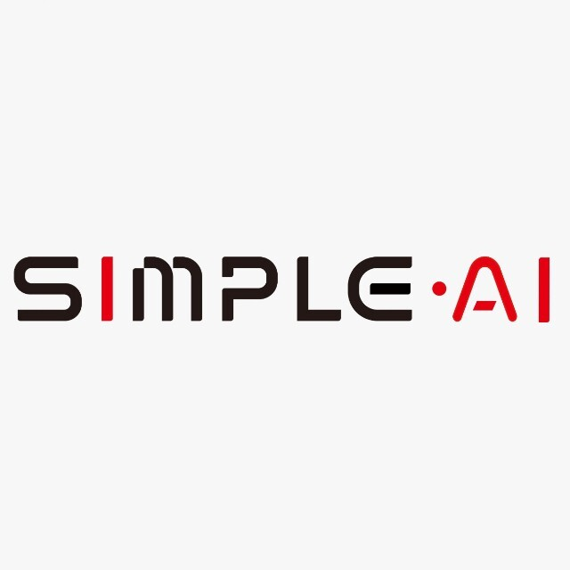
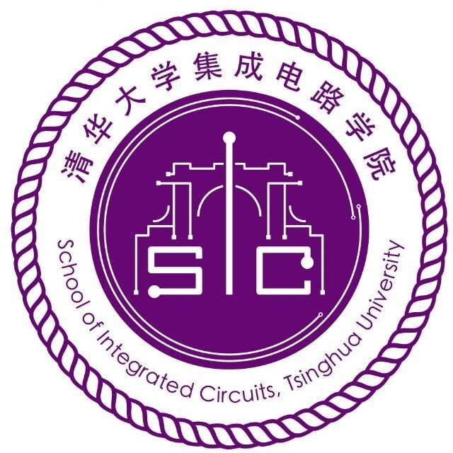

Simple AI 深朴智能
Jul. 2026 — Present
Intern
ROBOT LEARNING & EMBODIED AI
I am a second-year Ph.D. student at the School of Integrated Circuits, Tsinghua University.
My research interests lie in embodied AI, particularly robot learning, vision-language-action models, and world models.
I am currently an intern at Simple AI (深朴智能).
arXiv, 2026
Action-anchored latent alignment through UMI for data-efficient robot manipulation and UMI-to-robot task transfer.
arXiv, 2026
Fully onboard quadrupedal loco-manipulation using egocentric vision, geometric representations, and latency-aware state estimation.
arXiv, 2026
Efficient reinforcement learning for safe and agile quadruped navigation in densely cluttered environments.

Jul. 2026 — Present
Intern
